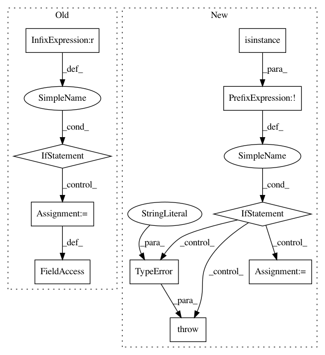

ec396411be11d514a44a18813278f3a41c73ac5f,deslib/des/des_knn.py,DESKNN,__init__,#DESKNN#Any#Any#Any#Any#Any#Any#Any#Any#Any#Any#,70
Before Change
// Set up the diversity metric
self.more_diverse = more_diverse
if metric == "DF":
self.diversity_func = negative_double_fault
elif metric == "Q":
self.diversity_func = Q_statistic
else:
self.diversity_func = ratio_errors
def estimate_competence(self, query, predictions=None):
estimate the competence level of each base classifier :math:`c_{i}` for
the classification of the query sample.
After Change
Information Fusion, vol. 41, pp. 195 – 216, 2018.
def __init__(self, pool_classifiers, k=7, DFP=False, with_IH=False, safe_k=None,
IH_rate=0.30,
pct_accuracy=0.5,
pct_diversity=0.3,
more_diverse=True,
metric="DF",
knn_classifier="knn"):
metric = metric.upper()
super(DESKNN, self).__init__(pool_classifiers, k, DFP=DFP, with_IH=with_IH, safe_k=safe_k,
IH_rate=IH_rate, knn_classifier=knn_classifier)
In pattern: SUPERPATTERN
Frequency: 3
Non-data size: 10
Instances
Project Name: scikit-learn-contrib/DESlib
Commit Name: ec396411be11d514a44a18813278f3a41c73ac5f
Time: 2018-09-23
Author: Natlem@users.noreply.github.com
File Name: deslib/des/des_knn.py
Class Name: DESKNN
Method Name: __init__
Project Name: PetrochukM/PyTorch-NLP
Commit Name: bb9335bbc981c0541e37a875d79d0ef419008574
Time: 2018-03-25
Author: petrochukm@gmail.com
File Name: torchnlp/text_encoders/subword_encoder.py
Class Name: SubwordEncoder
Method Name: __init__
Project Name: ray-project/ray
Commit Name: 6373c706615bc94c0a1e7fc564b3d18c3d342d91
Time: 2020-04-30
Author: ed.nmi.oakes@gmail.com
File Name: python/ray/serve/api.py
Class Name:
Method Name: create_backend